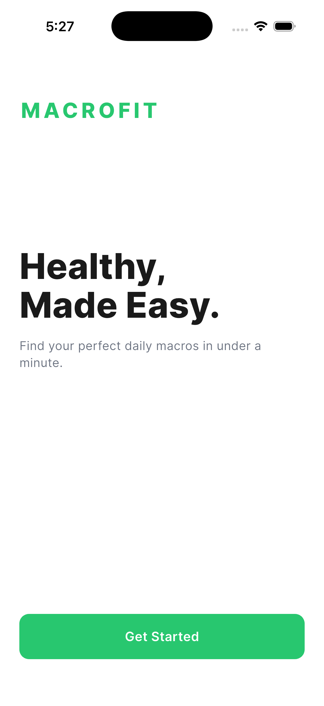
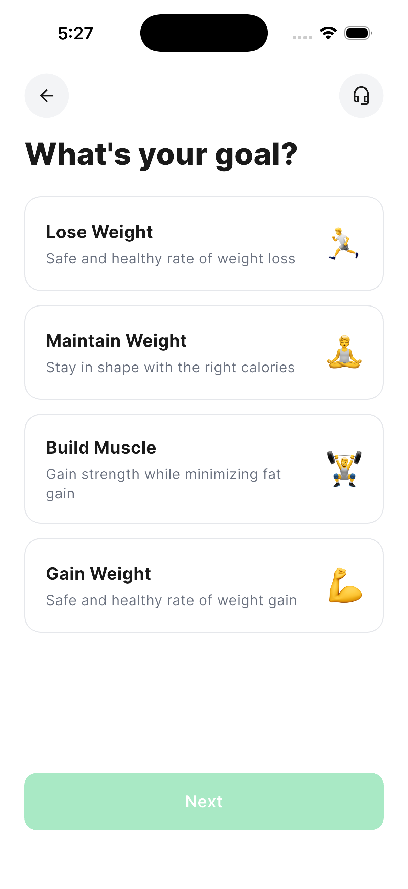
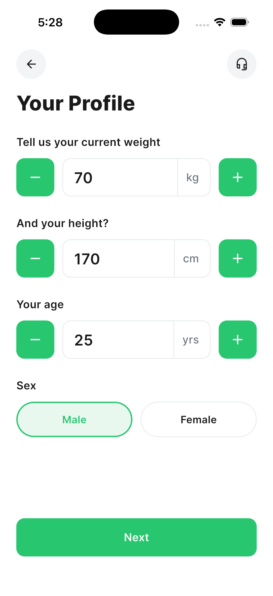
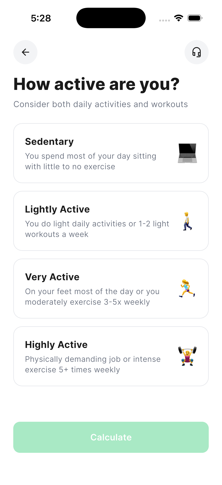
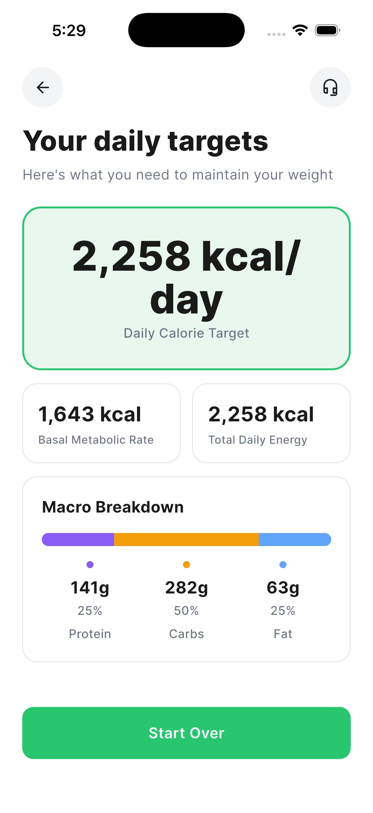

Healthy,
Made Easy.
A five-screen Flutter onboarding flow that turns weight, height, age, sex, activity level, and a fitness goal into a personalised daily calorie and macronutrient target — using the Mifflin-St Jeor equation.
The five-screen flow
Welcome → Goal → Profile → Activity → Results. Each screen uses Calo's visual language: rounded cards, light-green selected state, a circular icon app bar, and Inter typography.





How the numbers come out
All calculation logic lives in a single pure-Dart service with no UI imports — easy to test, easy to point to.
BMR uses Mifflin-St Jeor — the most accurate widely-used predictive equation for resting metabolic rate. TDEE multiplies by an activity factor (1.2 → 1.725). Daily calories adjust by the goal: −500 (lose), 0 (maintain), +250 (build muscle), +500 (gain). Macros are split per goal and converted to grams using 4 / 4 / 9 kcal per gram.
Four unit tests cover male BMR, female BMR, the full pipeline against a known input, and the goal-delta arithmetic.
| Goal | P | C | F |
|---|---|---|---|
| Lose Weight | 35% | 40% | 25% |
| Maintain | 25% | 50% | 25% |
| Build Muscle | 30% | 50% | 20% |
| Gain Weight | 25% | 55% | 20% |
What's in the box
5 screens
Welcome, Goal, Profile, Activity, Results — pushed via Flutter's Navigator, with the user profile passed forward as constructor arguments.
Reusable widgets
CaloAppBar, SelectableCard, NumberInput, PrimaryButton, MacroBar — every visual element from the spec, isolated and reused.
Pure-function service
MacroCalculator has no Flutter imports. Mifflin-St Jeor, TDEE, goal deltas, macro grams — all testable in isolation.
Design tokens
AppColors + AppTextStyles hold every colour and Inter weight from the brand spec, so a redesign is a single-file change.
Inter via google_fonts
One package dependency. No bundled font binaries; resolved at runtime and cached.
0 lint warnings
flutter analyze reports clean against flutter_lints. flutter test runs four passing tests.
Take a look at the code.
Spec-driven, ~1,200 lines, single commit history you can read end to end.